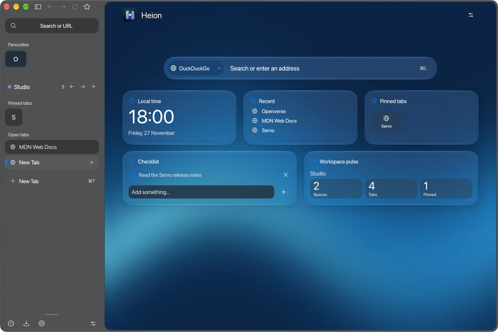
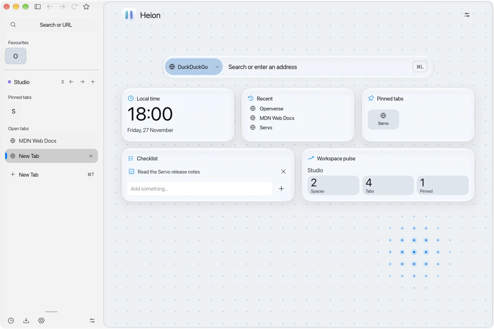

One Space per project
Keep tabs, folders, and pins together. Heion restores your Spaces and the tabs you were using when you reopen it.

HeionAn open-source browser for macOS
Keep projects in their own Spaces, make New Tab your own, and browse in a native macOS window. Built on Servo.

Keep tabs, folders, and pins together. Heion restores your Spaces and the tabs you were using when you reopen it.
Press ⌘L to search or open an address. Type > in the command bar to find browser actions.
Use About to install signed incremental updates. Your profile, history, and saved logins carry forward.
New Tab
Add, move, or resize the widgets you use. The grid lights up around the pointer, and Frosted and Liquid Glass follow macOS transparency settings.

Choose the disk image for your Mac, then drag Heion into Applications.